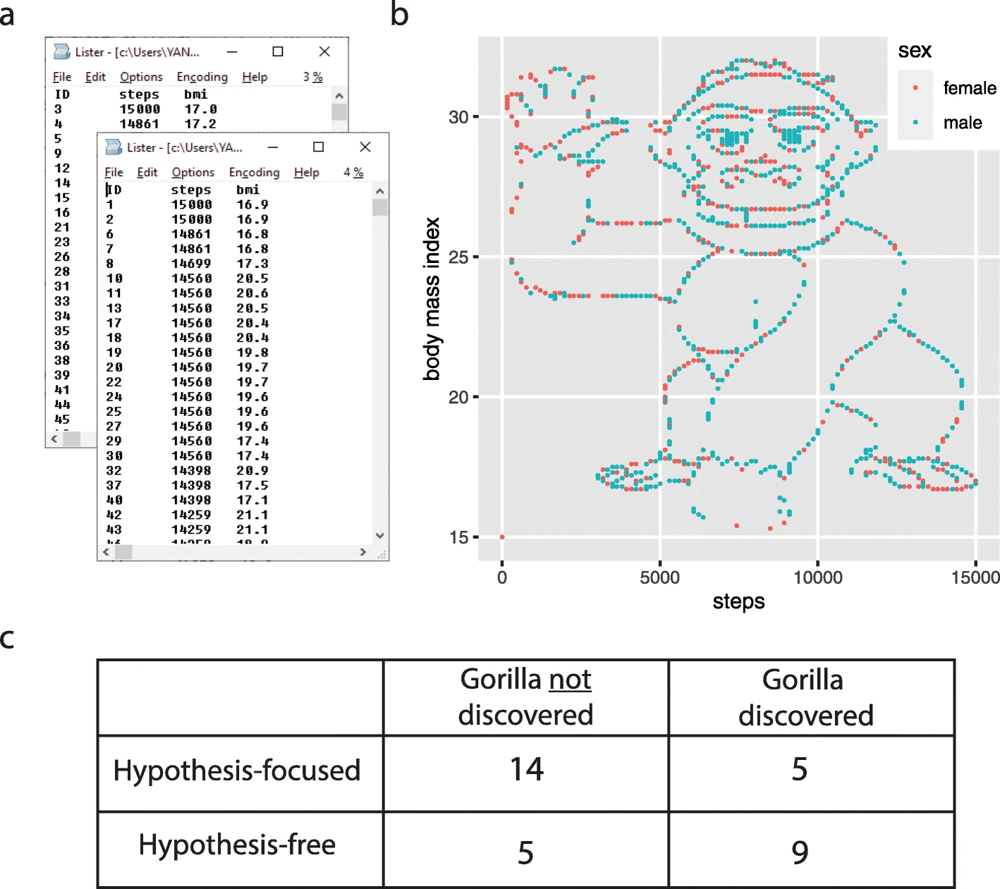
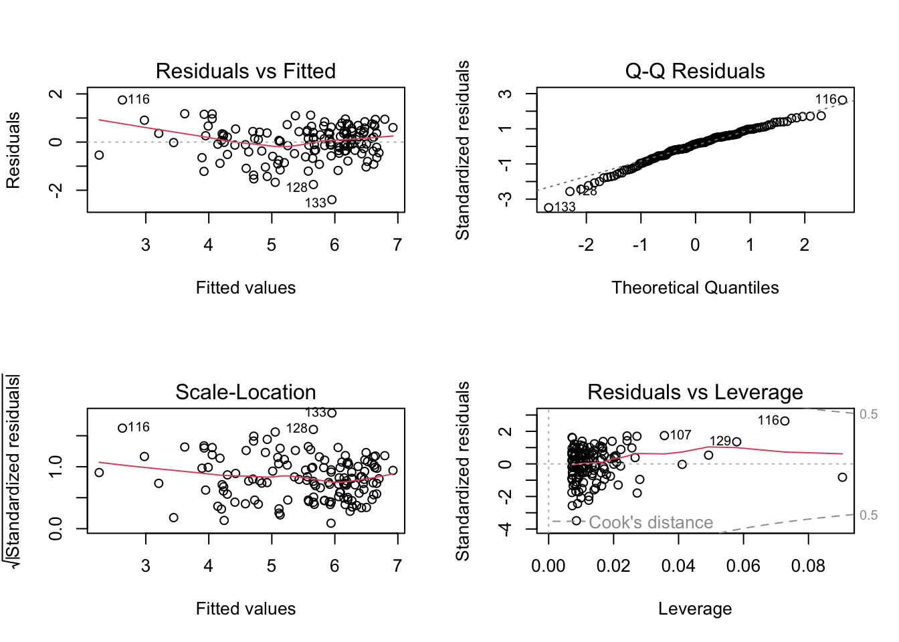
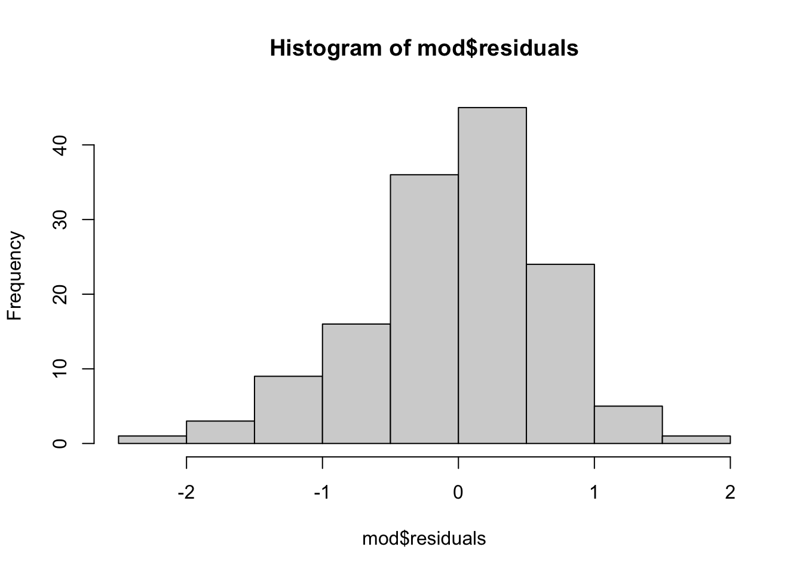

From the codebook : The World Happiness Report is a landmark survey of the state of global happiness . The report continues to gain global recognition as governments, organizations and civil society increasingly use happiness indicators to inform their policy-making decisions. Leading experts across fields – economics, psychology, survey analysis, national statistics, health, public policy and more – describe how measurements of well-being can be used effectively to assess the progress of nations. The reports review the state of happiness in the world today and show how the new science of happiness explains personal and national variations in happiness.
The “data dictionary” contains a brief explanation of each variable.
What’s the sample size from this study?
According to the “data dictionary”, the variable “Ladder.score” reports “The happiness score for each country, based on responses to the Cantril Ladder question that asks respondents to think of a ladder, with the best possible life for them being a 10, and the worst possible life being a 0”. Graph this variable; and report the mean and standard deviation. What do you learn about this variable from these statistics?
What is the highest and lowest happiness score for each country as a z-score? What do these statistics tell you?
According to the “data dictionary”, the variable “Social.support” reports “The national average of binary responses(either 0 or 1 representing No/Yes) to the question about having relatives or friends to count on in times of trouble.” Graph this variable; what do you learn / what seems important?
Define a linear model to predict Ladder.score from the variable Social.support. Report the intercept, slope, and R^2 value from this linear model, and describe what these statistics tell you about the data.
What’s the predicted happiness of a country whose social support level is a 1?
What’s the predicted happiness of a country whose social support level is a .25?
CHALLENGE QUESTION : The individual-level data (i.e., the happiness of each person in the country) were not shared with the public. However, the variables upperwhisker and lowerwhisker report the upper and lower bounds of the 95% Confidence Interval for the estimates of each individual country’s happiness. Could you use these statistics to determine which country had the most participants surveyed for happiness? Why / why not?
Lab 4 Review : The Monkey
What are our takeaways from this example?
Did you find the gorilla? Why / why not??
Research found that when people were given a hypothesis, they were less likely to see the gorilla in the data then when left to “explore” the dataset on their own.

Linear Models : Review
R2 is about error in our models.
R2 evaluates how much better the model is compared to using the mean to make predictions
ACTIVITY : more models, more predictions.
team up with a buddy. with your buddy, look over the codebook to identify another variable from the World Happiness dataset that you think will predict Ladder.score (the DV in your linear model). Treat this other variable as your IV for a second linear model. What do you expect the pattern to look like? Do you think this variable will be a better predictor of Ladder.score than Social.support??
graph the IV. what do you observe?
do the stats. illustrate the linear model through the power of a scatterplot, and report the slope and R2. What do you observe?
Raw Scores Z Scores
(Intercept) 2.260485 0.00282941
Social.support 2.883122 0.82085964
The Intercept : The Predicted Value of Y when ALL X values are Zero.
In Raw Units : The predicted value of happiness (on the 0 to 10 scale) for a country with zero social support (on average).
Standardized (Z-Score) :The predicted value of happiness (in z-score units) for a country with the average social support (zscore = 0 = 0 standard deviations from the mean = average).
z-scored intercept will always be zero, since our prediction is the “the average person on X will be average on Y” (without information on how people differ on X, our best guess is that they are average in Y, since the average is the best guess of a variable.
The Slope : The Change in Our Predicted Value of Y when X Changes By One.
In Raw Units : for every one-unit increase in social support, a country’s average happiness increases by 2.8 points on the 0-10 scale.
Standardized (Z-Scored) : for every 1-standard deviation increase in social support, a country’s average happiness increases by .88 standard deviations.
this is called a standardized beta
AND : when you have two numeric variables that been z-scored, it is equal to the correlation coefficient (r)
Note that the correlation coefficient should be equivalent to the standardized slope with one IV, and that this is the square root of our good friend \(R^2\).
NOTE : There’s also a function standardize() from the arm package (authored by stats wizards Andrew Gelman and Yu-Sung Su) that will automatically z-score the terms in your model. This uses a slightly different calculation for the z-score - rather than divide by one standard deviation, the authors recommend dividing by two standard deviations. You can read more about this logic here. This function is helpful when you have multiple IVs, or some IVs are not numeric (but you still want or need to standardize them; we’ll talk more about these methods when we start working with categorical/binary variables.)
library(arm)
Loading required package: MASS
Loading required package: Matrix
Loading required package: lme4
arm (Version 1.14-4, built: 2024-4-1)
Working directory is /Users/lapcat/Documents/catterson.github.io/102stats/lectures
Remember our friend the for-loop? Well, it’s back!
Reviewing Linear Models : Assumptions of Linear Regression
The interpretation of our linear model depends on a variety of different assumptions being met. You can read more about these from the great Gelman & Hill’s textbook : Data Analysis Using Regression. But below is a TLDR, with a few ideas of my own thrown in :)
Validity. Is your linear model the right model to answer the research question that you have? This is the big question, and often goes beyond the specific statistics that we are focusing on. Did you include the right variables in your model, or are you leaving something out? Are you studying the right sample of people, drawn from the right population? Are your measures valid? This is hard to do, and good to remember that it is hard so you ask yourself “am I doing a good job”?
Reliability of Measures. The variables in your linear model should be measured with low error (“garbage in, garbage out”). There are different ways to assess reliability.
Cronbach’s alpha (psych::alpha()) is good for assessing the inter-item reliability of a likert scale.
The Intraclass Correlation Coefficient (ICC) is often used for observational ratings where multiple judges form impressions of the same target.
Test-retest reliability is a great way to ensure that physiological or single-item measures will yield repeatable measures over time (assuming the target of measurement has not changed between time points). One way to test this is to define a linear model to predict the measure at one time point from the measure at another; you’d expect to see a strong relationship.
Independence. This is a big one - the residuals in your model need to be unrelated to each other. That is, I should not be able to predict the value of one error from another error. When the data in a linear model come from distinct individuals who are unrelated to each other, this assumption is usually considered to be met. However, there are often types of studies where the data are not independent.
Nested Data : Often times, individuals in a dataset belong to a group where there’s a clear dependence. For example, the happiness of individual members of a family is probably dependent on one another (since they share the same environment, stressors, etc.); the test-scores of children in a school are probably all related to each other (since they share the same teachers, administrators, funding, lead exposure in the drinking water, etc.)
Repeated Measures : If a person is measured multiple times, then their data at one time point will be related to their data at the second time point, since they are coming from the same person, with the same past experiences and beliefs and genetics and all that other good stuff.
If the data are not independent, then we will need to account for the dependence in the data. We will learn to do this when we review Multilevel Linear Models. (Spoiler : it’s more lines.)
Linearity. The dependent (outcome) variable should be the result of one or more linear functions (slopes). In other words, the outcome is the result of a bunch of straight lines. If the straight lines don’t properly “fit” or “explain” your data, then maybe you need some non-straight lines…you could bend the line (add a quadratic term), look for an interaction term (that tests whether there’s a multiplicative relationship between the variables), or apply a non-linear transformation to the data (i.e., often times income is log transformed, since a 9,000 point difference between 1000 and 10,000 dollars/month is not the same as a 9,000 point difference between 1,000,000 and 1,009,000 dollars/month).
Equal Variance of Errors (Homoscedasticity). The errors associated with the predicted values of the DV (the residuals) should be similar for all different values of the IV. Homoscedasticity means that the residual errors in our outcome variable are distributed the same across the different values of the IV. Heteroscedasticity means there is some non-constant variability in errors, which means that your model may not be an appropriate explanation of the data.
Normality of Errors (Residuals and Sampling). This assumption is less emphasized as our datasets have gotten larger, and methods for estimating sampling error have improved. But the basic idea is that statistics like confidence intervals and estimates of slopes assume that the errors in our model are normally distributed. If they are not, it’s likely that your model is not appropriately fitting the data (i.e., maybe some outliers are influencing the results.)
Testing Assumptions in R
Assumptions 1-3 require critical thinking about your methods and measures.
Assumptions 4 and 5 can be examined using the plot() function in base R - you may have accidentally come across these when trying to graph your linear model.
We talked about how to interpret these plots a little in lecture; here’s another tutorial that walks through the interpretation. Let us know (on Discord!) if you find another good example / explanation.
par(mfrow =c(2,2))plot(mod)

Assumption 6 can be examined by graphing the residuals of your model object with a histogram.
par(mfrow =c(1,1))hist(mod$residuals)

Okay! These are the basics of linear models. For Lab 5, you’ll take a practice mini exam that brings all these ideas together. I’ll post a key so you can check your work / understanding before the mini exam. We will continue to work with linear models for many weeks; and build more complexity to try and make better, more valid, predictions. Yeah!